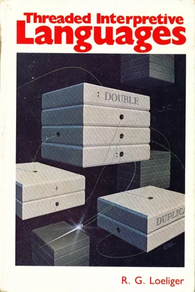

2 The Lambda Origin
Princeton, 1932. In a quiet office at the mathematics department,
Alonzo Church sat at his desk, scribbling notations that would one day change the world of computation. He was developing a formal system of mathematical logic based on functions and abstractions rather than numbers and operations. The lambda calculus was being born.
He wrote:
λx.xa simple identity function. Four symbols that capture the essence of function itself: input becomes output, cause becomes effect. Church couldn’t have known that decades later, these abstractions would help shape programming languages that would power everything from space shuttles to smartphones.Twenty-five years after Church’s work,
John McCarthy would take inspiration from the lambda calculus to create LISP , introducing parentheses as the iconic delimiter, the container that would say: within these bounds, transformation occurs.
And then, half a century after McCarthy,
Rich Hickey would sit at his own desk and think:
what if we made parentheses not just syntax, but semantics?
Alex paused, considering the irony. Here he was, implementing a poor excuse for a persistent data structure when Clojure had already perfected them. But this wasn’t for Clojure. This was for a world that couldn’t afford Clojure’s luxuries, the realm of embedded systems where he had begun his journey half a century ago.
A mutable place to store memories, in Clojure:
(def memories (atom {}))The mechanical engineering degree he’d earned in ’79 had been his foundation, but it was that single FORTRAN class that had altered the trajectory of his life. Punch cards and mainframes, primitive by today’s standards, yet they’d opened a door he never wanted to close.
The origin of a rewarding career, in Clojure:
(swap! memories assoc :origin {:year 1979
:language "FORTRAN"
:medium "punch cards"
:machine "mainframe"}){:origin
{:year 1979,
:language "FORTRAN",
:medium "punch cards",
:machine "mainframe"}}His smartphone chimed. A calendar reminder: “Meeting with Kai, Elena, and Raj – 8:00 AM.”
Alex took a sip of his coffee, black and bitter like the APL syntax he’d learned at his first job. He remembered how impressive it was that, instead of submitting FORTRAN punch cards to be compiled on the mainframe and getting back a printout, he could write APL programs interactively on an IBM Selectric teletypewriter. Wow, my first REPL, he thought. Then it dawned on him that APL had been his first laconic programming language, so laconic, in fact, that Conway’s Game Of Life can be implemented in one line of APL code, albeit write-only:
⍝ Conway's Game of Life In One Line Of APL Code Z←(3=M+.×(¯1 0 1∘.ׯ1 0 1))∨(M∧2=M+.×(¯1 0 1∘.ׯ1 0 1))
Alex still remembered the thrill of implementing his own FORTH system, called TIL, at that first job. He realized that FORTH was his second laconic language, and it had a REPL too. He had used TIL’s FORTH dialect to write the maintenance software for the manufacturing machine that was controlled by a small-refrigerator-size IBM Series/1 minicomputer, then had implemented TIL again for a Zilog Z80 single-board machine control computer. The constraints of those systems had demanded ingenuity and perseverance.
\ Create a FORTH "word" named "2DOUBLE", and use it : 2DOUBLE ( a b -- a b 2*a 2*b ) swap over 2 * over 2 * ; 1 2 2DOUBLE .s <4> 2 1 4 2 ok
That was the time when his colleague, Dave the astrophysicist who had written the PDP-11 FORTH control system for the Multiple Mirror Telescope outside Tucson, had introduced him to FORTH.
 “Threaded Interpretive Languages,” Alex murmured, remembering the BYTE book that had changed everything. He’d implemented FORTH in assembler for both the IBM Series/1 minicomputer, and the Zilog Z80 single-board computer, and later, with Dave, a meta-FORTH system for a Motorola 68000 minicomputer that could target FORTH systems for other computers.
That meta-FORTH was used to implement a Unix-like operating system for both the IBM PC and the Amiga. That had been a time of pure creation, when possibility seemed endless and hardware constraints were just puzzles waiting to be solved.
The path from FORTH to Clojure, in Clojure
(swap! memories assoc :career-path
[{:era "1980s",
:focus "Embedded Systems, APL, FORTH, Meta-FORTH"}
{:era "1990s",
:focus "Modula-2, Ada, Pascal, Database Development"}
{:era "2000s",
:focus "Cyber Security Startup, Acquisition"}
{:era "2010s",
:focus "Clojure, C++, Embedded Systems, Scale Indicators"}
{:era "2020s",
:focus "Clojure, Modern C++, Embedded Systems"}]){:origin
{:year 1979,
:language "FORTRAN",
:medium "punch cards",
:machine "mainframe"},
:career-path
[{:era "1980s", :focus "Embedded Systems, APL, FORTH, Meta-FORTH"}
{:era "1990s", :focus "Modula-2, Ada, Pascal, Database Development"}
{:era "2000s", :focus "Cyber Security Startup, Acquisition"}
{:era "2010s",
:focus "Clojure, C++, Embedded Systems, Scale Indicators"}
{:era "2020s", :focus "Clojure, Modern C++, Embedded Systems"}]}Alex glanced at his career path encoded in Clojure’s data structures. It was cleaner this way, more elegant than the tangled mess of reality. His journey from college FORTRAN, to APL, to FORTH-based embedded systems, to high-performance embedded relational database internals, to a cyber security startup, to Principal Engineer after acquisition, and finally to his current “retirement job”, it all looked so logical in retrospect. Even being laid off at 60 years old, which had felt devastating at the time, had led him back to embedded systems at an OEM company that manufactures weighing equipment.
Full circle. There was beauty in that symmetry.
Alex pulled up his prototype C++ code again. It wasn’t much, but it was a start. He had implemented a simple C++ persistent vector that avoided heap allocations and exceptions, making it suitable for embedded systems. It used copying, along with C++ Return Value Optimization (RVO) for performance, instead of structural sharing like Clojure, which was less efficient for large collections but perfectly reasonable for the small data sets typical in embedded applications.
The Zoom interface loaded on his screen. Three faces appeared, each in their own quadrant: Kai in Frankfurt, Elena from her apartment in New York, and Raj connecting from Bangalore. Three decades separated Alex from the youngest of them. Three decades of technological evolution, trials and errors, raising a family, and a great deal of soul searching.
“Morning, Alex,” Kai greeted, his German accent faint but discernible. At thirty-five, Kai was the C++ specialist, the one who understood the latest incarnation of a language that accretes features like a snowball rolling down a hill. With his shaved head and forearm tattoos that peeked out from under his rolled-up sleeves, Kai looked more like a punk musician than an embedded systems developer who specialized in medical devices.
Accrete /əˈkriːt/ verb
To grow or increase gradually by the addition of material.
Used in the Clojure community to describe:
- a philosophy of software evolution that emphasizes gradual, non-destructive growth over mutation or breaking changes, and
- how Clojure’s persistent data structures evolve by adding new data without modifying existing structures.
“How’s our oldest and wisest team member today?” Elena asked with a smile. Her background in linguistics made her the perfect ClojureScript expert, understanding the semantics of code in ways that transcended syntax. At thirty-three, she had already published papers on the computational theory of linguistic meaning and had been one of the early advocates for ClojureScript’s approach to frontend development.
“I’ve been thinking about our approach,” Alex said, ignoring the gentle tease about his age. “I was up half the night implementing a prototype.”
Raj, the mathematics wizard with an almost religious devotion to clojure.core.logic, raised an eyebrow. “You didn’t have to do that alone.” At twenty-eight, Raj was the youngest and perhaps the most brilliant of them all, currently working on a PhD in computational mathematics at Technische Universität (TU) Darmstadt when he wasn’t obsessing over logic programming and constraint satisfaction problems.
“Old habits,” Alex replied. “When you’ve spent decades coding through the night, it becomes a form of meditation.”
Alex shared his screen, revealing the C++ implementation he’d been working on.
“This is just a starting point,” Alex explained. “I’m using copying instead of structural sharing, but for small collections on embedded systems, it’s a reasonable trade-off.”
Kai examined the code, nodding. “I see what you’re doing. No dynamic allocation, no exceptions, and it’s all constexpr-friendly. But we’ll need to think about the performance implications of copying.”
“That’s where you come in,” Alex said. “I know the Clojure side, but you understand the nuances of modern C++. Together, we can create something that brings Clojure’s elegance to environments that can’t support a runtime.”
Elena leaned forward. “Cljonic,” she said suddenly. “That’s what we should call it.”
“Cljonic?” Raj repeated.
“It’s perfect,” Elena insisted. “It combines ‘Clojure’ with ‘laconic’, expressing much in few words. That’s what we’re trying to build, right? A concise, expressive library for C++ that captures Clojure’s spirit.”
Alex smiled. The name resonated with him. After all, wasn’t that what had drawn him to APL and FORTH all those years ago, and later to Clojure? The ability to express complex ideas with elegant simplicity?
“Cljonic it is,” he agreed. “A bridge between worlds, the functional elegance of Clojure and the bare-metal efficiency of C++.”
“But why now?” Raj asked, his hands gesturing animatedly. “There are already C++ libraries with functional features. Ranges, views, algorithms… C++20 has a lot of this built in.”
“Those features are great,” Alex acknowledged, “but they’re not designed specifically for embedded systems. Most embedded developers I’ve worked with don’t have time to keep up with the latest C++ features. They’re self-taught, learning on the job. They need something that’s easy to learn and use properly. And they need to be able to prototype ideas in Clojure on a big-computer.”
“And most embedded systems can’t use the heap or exceptions,” Kai added. “So many modern C++ features are off-limits.”
“Exactly,” Alex said. “That’s where Cljonic comes in. We’re targeting embedded systems that can’t use dynamic allocation but still need the benefits of immutability and functional programming. Safe code that’s easy to read, understand, and maintain.”
Elena nodded. “I like the approach. We’re not trying to replace Clojure or compete with C++’s standard library. We’re creating a bridge for a specific domain.”
“But we need to be careful about performance,” Raj cautioned. “Copying everything will be expensive.”
“That’s true,” Alex agreed, “but we’re targeting small collections. And many embedded projects have plenty of non-performance-critical code where safety and maintainability are more important than raw speed.”
Kai scratched his chin thoughtfully. “We could add some optimizations. Maybe use small buffer optimization techniques for collections, or add a way to specify a custom allocator for systems that can use some forms of controlled allocation.”
“Good ideas,” Alex said. “But let’s start simple and expand from there.”
“We should define our goals clearly,” Elena suggested. “What exactly are we trying to achieve with Cljonic?”
Alex thought for a moment. “I think our primary goal should be to bring Clojure’s philosophy to C++ embedded systems. That means immutability by default, pure functions where possible, and a focus on data transformations rather than state mutations.”
“And it should be header-only,” Kai added. “No build system complexity.”
“Bounded collection sizes,” Raj contributed. “No dynamic growth, but configurable maximum sizes.”
“Default values instead of exceptions,” Elena said. “If you try to access an element that doesn’t exist, you get a sensible default rather than a crash or an error code.”
Alex nodded, impressed by how quickly they were coalescing around a shared vision. “This is good. Very good. Let me add one more: everything should be constexpr whenever possible. That way, we can catch errors at compile time and enable compile-time evaluation.”
Kai’s eyes lit up. “That’s a great goal. Modern C++ compilers can do amazing things with constexpr.”
“So we’re agreed,” Alex said. “Cljonic will be a header-only, embedded-systems-focused C++ library that brings Clojure’s functional programming style to environments that can’t use the heap or exceptions. It will be immutable by default, with bounded collections, default values, and extensive use of constexpr.”
“What should we implement first?” Raj asked.
“I’ve started with a persistent vector, otherwise called a vector in Clojure,” Alex said, “but we should think about what other data structures we need.”
“Maps, definitely,” Elena said. “Clojure’s immutable maps are incredibly useful.”
“And some form of sequences or lazy evaluation,” Raj added.
“Function composition, partial application and transducers would be nice,” Kai suggested.
Alex smiled. “Ambitious. I like it. But let’s start with the simplest core data structures: set, string, range, repeat, and vector. Once we have those, we can build on them, and then tackle maps.”
They spent the next hour outlining the API for Cljonic’s core data structures. Alex found himself energized by the collaboration, by the blend of perspectives and expertise. Kai’s deep knowledge of modern C++, Elena’s understanding of language design, Raj’s mathematical precision, all of it complemented Alex’s decades of experience in embedded systems, and his autistic tendency to think outside the box.
As they wrapped up, Alex shared a thought that had been brewing: “You know, what we’re doing here is more than just creating a library. We’re bringing a philosophy, a way of thinking about code, to a domain that hasn’t been exposed to it much. Clojure changed how I think about programming. Maybe Cljonic can do the same for embedded developers.”
“That’s quite a goal,” Elena said, but her tone was encouraging rather than dismissive.
“Maybe,” Alex admitted. “But I’ve seen what happens when developers are exposed to functional programming for the first time. It’s like a light bulb goes on. Suddenly, they see solutions they couldn’t see before.”
“I had that experience with Clojure,” Raj said. “It was like learning to think in a new dimension.”
“Exactly,” Alex said. “That’s what I want to bring to the embedded world. Not just a library, but a new way of thinking.”
“Then let’s make it happen,” Kai said, his pragmatic nature asserting itself. “I’ll start on a proper implementation of the persistent vector, incorporating the ideas we discussed.”
@@@
“I’ll work on the map implementation,” Elena offered.
“I’ll develop the sequence abstractions,” Raj said.
“And I’ll flesh out the overall architecture and documentation,” Alex concluded. “Let’s reconvene in a few days to share our progress.”
As they signed off, Alex felt a sense of purpose he hadn’t experienced in years. This project wasn’t just about code, it was about legacy, about passing on a way of thinking that had served him well throughout his career. It was about building a bridge between the elegant abstractions of Clojure and the bare-metal constraints of embedded systems.
He opened a new file and began typing:
// Cljonic Design Principles
// 1. Immutability by default
// 2. Pure functions where possible
// 3. Explicit state transitions
// 4. No dynamic allocation
// 5. No exceptions
// 6. Bounded collections
// 7. Default values instead of errors
// 8. constexpr everything
// 9. Header-only implementation
// 10. Simple, understandable APITen principles. A foundation to build upon. Alex saved the file and leaned back in his chair, looking out at the snow-covered landscape. This project would be his way of giving back to the programming community, of sharing what he’d learned over a lifetime of coding.
The phone rang, interrupting his thoughts. It was his daughter.
“Dad, are you still coming for dinner tonight? The kids have been asking about you all day.”
“Of course,” Alex said, smiling. “Wouldn’t miss it for the world.”
“You’re not working on another project, are you? You promised to take it easier after the heart scare last year.”
“Just a small one,” Alex admitted. “Nothing stressful.”
“Dad…”
“It’s a good one, sweetheart. Something meaningful. I’ll tell you about it tonight.”
After hanging up, Alex turned back to his computer. He had a few hours before dinner, enough time to flesh out the architecture document. As he typed, he found himself thinking about the generational divide in programming. His grandchildren would grow up in a world so different from the one he’d known, a world of neural networks, quantum computing, and programming languages that might make even Clojure look primitive.
But some principles were timeless. Immutability. Simplicity. Elegance. These were the ideas he wanted to pass on, not just to his team, but to future generations of programmers.
Over the next few days, the team made remarkable progress. Kai’s implementation of PersistentVector had evolved significantly:
template <typename T, size_t MaxSize = CLJONIC_COLLECTION_MAXIMUM_ELEMENT_COUNT>
class PersistentVector {
private:
struct VectorImpl {
std::array<T, MaxSize> elements;
size_t count = 0;
};
VectorImpl impl;
public:
constexpr PersistentVector() = default;
// Private constructor for creating from an existing implementation
constexpr explicit PersistentVector(const VectorImpl& impl) : impl(impl) {}
// Create a new vector with an additional element
constexpr PersistentVector<T, MaxSize> conj(const T& element) const {
if (impl.count >= MaxSize) {
return *this; // Full, return unchanged
}
VectorImpl new_impl = impl;
new_impl.elements[new_impl.count++] = element;
return PersistentVector<T, MaxSize>(new_impl);
}
// Get element at index, or default if out of range
constexpr T nth(size_t index, T default_value = T{}) const {
if (index >= impl.count) {
return default_value;
}
return impl.elements[index];
}
// Return a new vector with element at index replaced
constexpr PersistentVector<T, MaxSize> assoc(size_t index, const T& new_value) const {
if (index >= impl.count) {
return *this; // Out of bounds, return unchanged
}
VectorImpl new_impl = impl;
new_impl.elements[index] = new_value;
return PersistentVector<T, MaxSize>(new_impl);
}
// Execute a function for each element (immutable)
template <typename F>
constexpr void each(F&& f) const {
for (size_t i = 0; i < impl.count; ++i) {
f(impl.elements[i]);
}
}
// Transform each element and return a new vector
template <typename F>
constexpr auto map(F&& f) const {
using R = std::invoke_result_t<F, T>;
PersistentVector<R, MaxSize> result;
for (size_t i = 0; i < impl.count; ++i) {
result = result.conj(f(impl.elements[i]));
}
return result;
}
// Filter elements and return a new vector
template <typename F>
constexpr PersistentVector<T, MaxSize> filter(F&& pred) const {
PersistentVector<T, MaxSize> result;
for (size_t i = 0; i < impl.count; ++i) {
if (pred(impl.elements[i])) {
result = result.conj(impl.elements[i]);
}
}
return result;
}
constexpr size_t size() const {
return impl.count;
}
constexpr bool empty() const {
return impl.count == 0;
}
// First element, or default if empty
constexpr T first(T default_value = T{}) const {
return empty() ? default_value : impl.elements[0];
}
// All but the first element
constexpr PersistentVector<T, MaxSize> rest() const {
if (empty()) {
return *this;
}
PersistentVector<T, MaxSize> result;
for (size_t i = 1; i < impl.count; ++i) {
result = result.conj(impl.elements[i]);
}
return result;
}
// Reduce to a single value
template <typename Acc, typename F>
constexpr Acc reduce(F&& f, Acc initial) const {
Acc result = initial;
for (size_t i = 0; i < impl.count; ++i) {
result = f(result, impl.elements[i]);
}
return result;
}
};Elena had made similar progress on PersistentMap:
template <typename K, typename V, size_t MaxSize = CLJONIC_COLLECTION_MAXIMUM_ELEMENT_COUNT>
class PersistentMap {
private:
struct Entry {
K key;
V value;
constexpr bool operator==(const K& other_key) const {
return key == other_key;
}
};
struct MapImpl {
std::array<Entry, MaxSize> entries;
size_t count = 0;
};
MapImpl impl;
// Find index of key, or -1 if not found
constexpr int find_index(const K& key) const {
for (size_t i = 0; i < impl.count; ++i) {
if (impl.entries[i].key == key) {
return static_cast<int>(i);
}
}
return -1;
}
public:
constexpr PersistentMap() = default;
// Private constructor for creating from an existing implementation
constexpr explicit PersistentMap(const MapImpl& impl) : impl(impl) {}
// Associate a key with a value, returning a new map
constexpr PersistentMap<K, V, MaxSize> assoc(const K& key, const V& value) const {
int idx = find_index(key);
MapImpl new_impl = impl;
if (idx >= 0) {
// Update existing entry
new_impl.entries[idx].value = value;
} else if (impl.count < MaxSize) {
// Add new entry
new_impl.entries[new_impl.count] = {key, value};
new_impl.count++;
}
return PersistentMap<K, V, MaxSize>(new_impl);
}
// Get value for key, or default if not found
constexpr V get(const K& key, V default_value = V{}) const {
int idx = find_index(key);
if (idx >= 0) {
return impl.entries[idx].value;
}
return default_value;
}
// Check if key exists
constexpr bool contains(const K& key) const {
return find_index(key) >= 0;
}
// Remove a key, returning a new map
constexpr PersistentMap<K, V, MaxSize> dissoc(const K& key) const {
int idx = find_index(key);
if (idx < 0) {
return *this; // Key not found, return unchanged
}
MapImpl new_impl;
new_impl.count = impl.count - 1;
// Copy entries before the removed one
for (int i = 0; i < idx; ++i) {
new_impl.entries[i] = impl.entries[i];
}
// Copy entries after the removed one
for (size_t i = idx + 1; i < impl.count; ++i) {
new_impl.entries[i - 1] = impl.entries[i];
}
return PersistentMap<K, V, MaxSize>(new_impl);
}
// Execute a function for each key-value pair (immutable)
template <typename F>
constexpr void each(F&& f) const {
for (size_t i = 0; i < impl.count; ++i) {
f(impl.entries[i].key, impl.entries[i].value);
}
}
constexpr size_t size() const {
return impl.count;
}
constexpr bool empty() const {
return impl.count == 0;
}
};And Raj had begun work on the sequence abstraction:
// A sequence interface for C++
template <typename T>
class ISequence {
public:
virtual ~ISequence() = default;
virtual bool empty() const = 0;
virtual T first(T default_value = T{}) const = 0;
virtual std::unique_ptr<ISequence<T>> rest() const = 0;
};
// A wrapper to make PersistentVector conform to ISequence
template <typename T, size_t MaxSize>
class VectorSequence : public ISequence<T> {
private:
PersistentVector<T, MaxSize> vec;
public:
constexpr explicit VectorSequence(PersistentVector<T, MaxSize> v) : vec(std::move(v)) {}
bool empty() const override {
return vec.empty();
}
T first(T default_value = T{}) const override {
return vec.first(default_value);
}
std::unique_ptr<ISequence<T>> rest() const override {
return std::make_unique<VectorSequence<T, MaxSize>>(vec.rest());
}
};But when they reconvened, Raj had concerns.
“This sequence interface won’t work for embedded systems,” he said, his expression troubled. “I got carried away and forgot we can’t use virtual functions or unique_ptr because they rely on the heap.”
“That’s alright,” Alex said. “It’s a common mistake. We all fall back into our usual patterns. Let’s rethink our approach to sequences.”
“We could use static polymorphism instead,” Kai suggested. “C++ templates and concepts instead of runtime polymorphism.”
“Or we could just define sequence operations as free functions that work on our data structures,” Elena said. “Clojure’s sequence functions like first, rest, and cons are actually just functions that work on collections that satisfy the sequence abstraction.”
“I like that approach,” Alex said. “It’s simpler and more in line with how Clojure actually works. Let’s define a set of functions that operate on any type that provides the right operations.”
Raj nodded, already rethinking his approach. “So instead of an interface, we define a concept, a set of requirements that a type must satisfy to be considered a sequence.”
“Exactly,” Kai said. “And we can use C++20’s actual concept feature to enforce that.”
They worked together to redefine the sequence abstraction:
// A concept that defines what it means to be a sequence
template <typename T>
concept Sequence = requires(T t, typename T::value_type default_val) {
{ t.empty() } -> std::convertible_to<bool>;
{ t.first(default_val) } -> std::convertible_to<typename T::value_type>;
{ t.rest() } -> std::convertible_to<T>;
};
// Free functions that work on any Sequence
template <typename S>
requires Sequence<S>
constexpr auto first(const S& seq) {
return seq.first();
}
template <typename S>
requires Sequence<S>
constexpr auto first_or(const S& seq, typename S::value_type default_val) {
return seq.first(default_val);
}
template <typename S>
requires Sequence<S>
constexpr auto rest(const S& seq) {
return seq.rest();
}
template <typename S, typename F>
requires Sequence<S>
constexpr void each(const S& seq, F&& f) {
if (seq.empty()) return;
f(seq.first());
each(seq.rest(), std::forward<F>(f));
}
template <typename S, typename F, typename Acc>
requires Sequence<S>
constexpr auto reduce(const S& seq, F&& f, Acc initial) {
if (seq.empty()) return initial;
Acc next_acc = f(initial, seq.first());
return reduce(seq.rest(), std::forward<F>(f), next_acc);
}
template <typename S, typename F>
requires Sequence<S>
constexpr auto map(const S& seq, F&& f) {
if (seq.empty()) {
return S{};
}
using R = std::invoke_result_t<F, typename S::value_type>;
// This is a simplified implementation - a real one would need to handle different return types
S result = S{}.conj(f(seq.first()));
return concat(result, map(seq.rest(), std::forward<F>(f)));
}Alex sat back in his chair, a satisfied smile spreading across his face. They had done it—laid the groundwork for Cljonic. The basic data structures and sequence operations were taking shape, and the design principles were solid.
He knew they still had a long way to go. They needed to implement more data structures, refine the API, write comprehensive documentation, and test everything extensively. But they had a foundation to build on, a vision to guide them, and a team with the perfect mix of expertise.
As he closed his laptop and prepared to head to his daughter’s for dinner, Alex felt a quiet pride. This project wasn’t just about code, it was about bridging worlds, about bringing the beauty of functional programming to a domain that desperately needed it. It was about passing on a way of thinking to the next generation of programmers.
The snow continued to fall outside, each flake a unique pattern, yet part of a greater whole. Like the parentheses in Clojure, they contained worlds within worlds, structures within structures. And like the C++ he’d been writing, they were bound by constraints that somehow made them more beautiful, not less.
Alex grabbed his coat and headed out the door. The Cljonic journey was just beginning, but already it felt right. It felt like coming home.
End of Chapter 1
❧